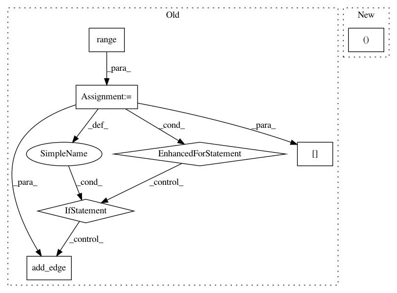

fabeffe39e70e1c371bcce158b3b8b0dd029e7a6,gensim/summarization/summarizer.py,,_set_graph_edge_weights,#Any#,74
Before Change
documents = graph.nodes()
weights = _bm25_weights(documents)
for i in range(len(documents)):
for j in range(len(documents)):
if i == j or weights[i][j] < WEIGHT_THRESHOLD:
continue
sentence_1 = documents[i]
sentence_2 = documents[j]
edge_1 = (sentence_1, sentence_2)
edge_2 = (sentence_2, sentence_1)
if not graph.has_edge(edge_1):
graph.add_edge(edge_1, weights[i][j])
if not graph.has_edge(edge_2):
graph.add_edge(edge_2, weights[j][i])
// Handles the case in which all similarities are zero.
// The resultant summary will consist of random sentences.
if all(graph.edge_weight(edge) == 0 for edge in graph.edges()):
_create_valid_graph(graph)
After Change
if i == j or weight < WEIGHT_THRESHOLD:
continue
edge = (documents[i], documents[j])
if not graph.has_edge(edge):
graph.add_edge(edge, weight)
In pattern: SUPERPATTERN
Frequency: 3
Non-data size: 7
Instances
Project Name: RaRe-Technologies/gensim
Commit Name: fabeffe39e70e1c371bcce158b3b8b0dd029e7a6
Time: 2019-01-17
Author: __Singleton__@hackerdom.ru
File Name: gensim/summarization/summarizer.py
Class Name:
Method Name: _set_graph_edge_weights
Project Name: deepmipt/DeepPavlov
Commit Name: 6d3e4bdc22cc89fb7ecf188ccf0479632012026f
Time: 2018-04-18
Author: dilyara.rimovna@gmail.com
File Name: deeppavlov/models/evolution/check_binary_mask.py
Class Name:
Method Name: get_graph_and_plot
Project Name: deepmipt/DeepPavlov
Commit Name: 4fca544205a55010e8959bb760aece5be80dc3a5
Time: 2018-06-26
Author: dilyara.rimovna@gmail.com
File Name: deeppavlov/models/evolution/check_binary_mask.py
Class Name:
Method Name: get_graph_and_plot